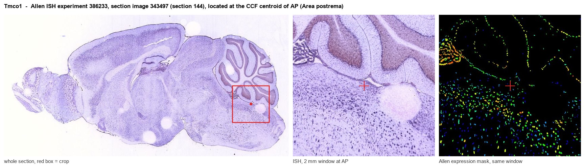
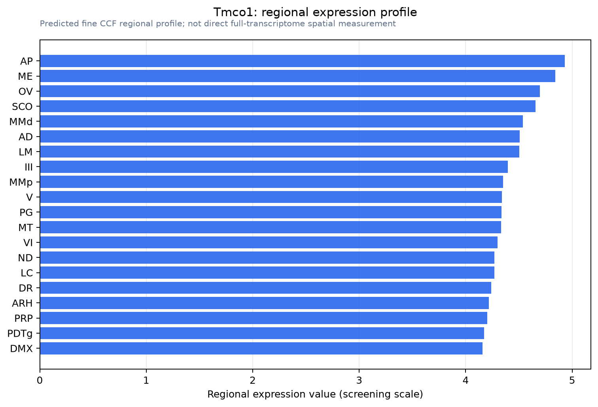

Tmco1
Calcium load-activated calcium channel (CLAC channel) (GEL complex subunit TMCO1) (Transmembrane and coiled-coil domain-containing protein 1)
Spatial tier: REGION_BIASED · Class: ION_CHANNEL · Top region: AP (Area postrema) · Positive regions: 41/554
41.6Discovery Score
38.6Targetability Score
CEvidence grade C
What this means: Tmco1: fine CCF profile is region-biased toward AP (top regions: AP, ME, OV, SCO, MMd); this is a discovery lead, not direct proof.
Function in AP: evidence, prediction, innovation
- Gene function
- TMCO1 is an endoplasmic-reticulum membrane protein that reversibly homotetramerises when ER Ca2+ stores overfill, forming a Ca2+-selective calcium load-activated calcium (CLAC) channel that vents excess Ca2+ to the cytosol. It also works with the ER membrane protein complex in multipass membrane protein folding. Human loss-of-function causes cerebrofaciothoracic dysplasia.
- Region function
- The area postrema is a circumventricular organ in the dorsal medulla whose fenestrated capillaries let it sample blood-borne GDF15, amylin, GLP-1 and toxins. Its excitatory neurons project to the NTS and parabrachial nucleus to drive nausea, emesis, conditioned taste aversion and anorexia.
- Published in this region
- none No region-specific literature found. Wang QC et al. 2016 showed Tmco1 knockout mice reproduce human cerebrofaciothoracic dysplasia with severe ER Ca2+ mishandling, and Yang et al. 2022 linked TMCO1-dependent Ca2+ homeostasis to corpus callosum development via ERK.
- Predicted function
- Prediction: AP neurons are peptidergic and chronically driven by circulating ligands, so they should carry a heavy ER Ca2+ load; Tmco1 would be the safety valve preventing store overfilling during sustained GFRAL, CALCR and GLP1R signalling. AP-restricted Tmco1 loss should cause ER Ca2+ overload, UPR induction and failure of sustained firing, giving normal acute nausea but poorly maintained responses to repeated GDF15 or LiCl challenge and age-accelerated AP neuron dysfunction.
- Innovation
- ★★★★☆ 4/5 TMCO1 is studied only as a developmental-disease and cell-biology gene, so its role in a high-output secretory nucleus is untouched, although as a ubiquitous ER protein it may lack AP specificity.
- Tools
- Germline Tmco1 knockout mice (Wang QC 2016; Sun Z 2018); commercial anti-TMCO1 antibodies; AAV-shRNA or CRISPR for AP-restricted loss; ER Ca2+ indicators (G-CEPIA1er) and GCaMP read-out. No Cre driver or selective pharmacology.
- References
Direct evidence located at the region

Allen ISH experiment 386233, section image 343497 (section 144): the section that contains the CCF centroid of Area postrema according to the Allen image-to-atlas alignment (reference_to_image), with a 2 mm window around that point. Left: whole section, red box = window. Middle: ISH signal. Right: Allen's expression-mask view of the same window. open this image in the Allen viewer
Look it up yourself: Allen Mouse Brain ISH for Tmco1Allen reference atlas: AP (structure 207)ABC Atlas MERFISH viewer(in the ABC Atlas choose dataset MERFISH-C57BL6J-638850-CCF, colour cells by gene "Tmco1" or by parcellation_substructure "AP")All genes confined to AP + 3-D brain
Direct spatial evidence
MERFISH REGION LOCATOR

Regional expression figure

Predicted WMB × fine-CCF profile; not direct full-transcriptome spatial measurement.
Spatial profile
Evidence and specificity
- Evidence status
- PREDICTED_FINE
- Direct sources
- None; predicted localization only
- Exclusive threshold
- 12 positive regions out of 554
- Spatial specificity
- 0.288
- Top-region fraction
- 0.040
- Filter status
- PASS
Interpretation limits
- Cell-type-to-region projection is imputed expression, not direct spatial measurement.
- Adult reference atlases do not establish stability across age, sex, strain, state, or disease.
- Transcript abundance does not guarantee protein abundance or genetic-tool performance.